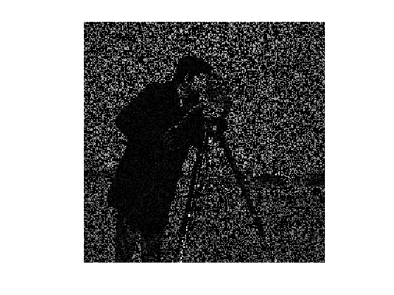
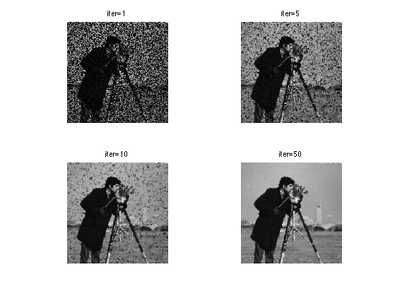
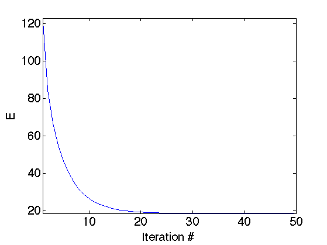
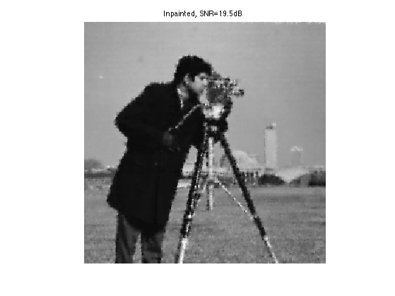
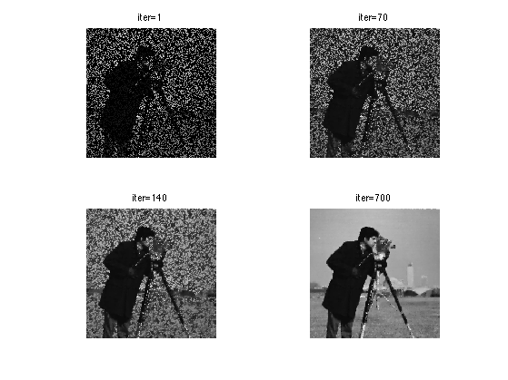
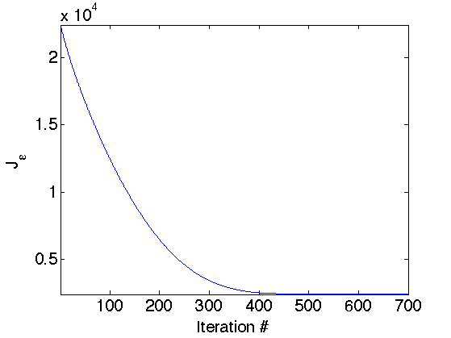
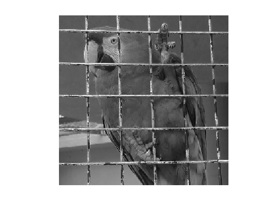
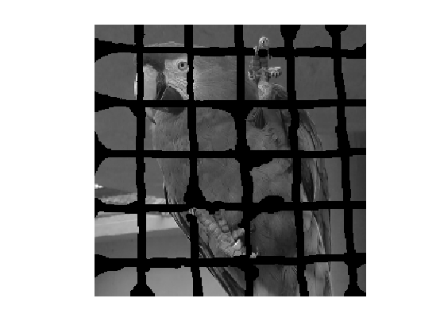
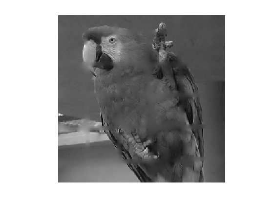

Inpainting using Variational Regularization
This numerical tour explores the use of variational energies (Sobolev, total variation) to regularize the image inpaiting problem.
Contents
Here we consider inpainting of damaged observation without noise.
Installing toolboxes and setting up the path.
You need to download the following files: signal toolbox and general toolbox.
You need to unzip these toolboxes in your working directory, so that you have toolbox_signal and toolbox_general in your directory.
For Scilab user: you must replace the Matlab comment '%' by its Scilab counterpart '//'.
Recommandation: You should create a text file named for instance numericaltour.sce (in Scilab) or numericaltour.m (in Matlab) to write all the Scilab/Matlab command you want to execute. Then, simply run exec('numericaltour.sce'); (in Scilab) or numericaltour; (in Matlab) to run the commands.
Execute this line only if you are using Matlab.
getd = @(p)path(p,path); % scilab users must *not* execute this
Then you can add the toolboxes to the path.
getd('toolbox_signal/'); getd('toolbox_general/');
Missing Pixels and Inpainting
Inpainting corresponds to filling holes in images.
First we load the image \(f_0 \in \RR^N\) of \(N=n\times n\) to be inpainted.
name = 'cameraman';
n = 256;
f0 = rescale( load_image(name, n) );
Display the original image.
clf; imageplot(f0);
Ratio of removed pixels.
rho = .7;
Construct a random mask \(\Ga = \chi_{\Om}\) so that \(\Ga_i=0\) for removed pixels \(i \notin \Om\), and \(\Ga_i=1\) for kept pixels \(i \in \Om\).
Gamma = rand(n)>rho;
We create the masking operator \(\Phi\) which is a diagonal operator: \[ (\Phi f)_i = \Ga_i f_i \]
Phi = @(f)f.*Gamma;
Compute the damaged observation \(y=\Phi(f_0)\) (no noise is added).
y = Phi(f0);
Display the observations.
clf; imageplot(y);
Sobolev Impainting
We solve the inpainting problem by minimzing the Sobolev norm of the image under the constraint of matching the observation \[ f^\star = \uargmin{ \Phi(f) = y } E(f) = \norm{\nabla f}^2 \] where \(\nabla\) is a finite difference approximation of the gradient.
It can be shown that the solution to this problem is an harmonic function with prescribed boundary condition \[ \forall i \notin \Om, \quad (\Delta f^\star)_i=0 \qandq \forall i \in \Om, \quad f^\star_i = y_i. \]
This problem requires the constrained minimization of a smooth function, it can thus be solved using a projected gradient descent \[ f^{(\ell+1)} = \Pi \pa{ f^{(\ell)} + \tau \Delta(f^{(\ell)}) }\] where \( \Pi \) is the orthogonal projector on the constraint \(y=\Phi f\) \[ (\Pi f)_i = \choice{ y_i \qifq i \in \Om, \\ f_i \qifq i \notin \Om, \\ } \]
Pi = @(f)f.*(1-Gamma) + y.*Gamma;
Here \( \Delta = -\nabla^* \circ \nabla = \text{div} \circ \nabla \) is the gradient of the Sobolev energy \( E \).
Delta = @(f)div(grad(f));
For convergence, the gradient descent step size should satisfy: \[ \tau<\frac{2}{\norm{\Delta}}=\frac{1}{4} \]
tau = .8/4;
Exercice 1: (check the solution) Perform the projected gradient descent. Record in a variable E the evolution of the Sobolev energy \(E\).
exo1;
Display the decay of the energy \(E(f^{(\ell)})\) with the iterations.
clf; plot(E); axis('tight'); set_label('Iteration #', 'E');
Display the result.
clf; imageplot(f, strcat(['Inpainted, SNR=' num2str(snr(f0,f),3) 'dB']));
Inpainting with TV Regularization
A non-linear prior replaces the Sobolev energy by the TV norm, that tends to better reconstruct edges. Here we use a smoothed TV norm to avoid convergence issue with gradient descent algorithms.
The smoothed TV norm reads: \[ J_\epsilon(f) = \sum_x \sqrt{\norm{ \nabla f(x) }^2+\epsilon^2} \]
We use a projected gradient descent to solve this problem \[ f^{(\ell+1)} = \Pi \pa{ f^{(\ell)} + \tau G_\epsilon(f^{(\ell)}) }\] where \( G_\epsilon \) is the gradient of \(J_\epsilon\), that is defined as \[ G_\epsilon(f) = -\text{div} N_\epsilon( \nabla f ) \] where \( N_\epsilon \) is the following normalization operator \[ N_\epsilon(u)_i = \frac{u_i}{ \sqrt{\norm{u_i}^2 + \epsilon^2} } \] that is applied to any vector field \(u=(u_i)_i \in \RR^{N \times 2} \) for \(u_i \in \RR^2\).
Regularization parameter \(\epsilon\) for the TV norm
epsilon = 1e-2;
Define the normalization operator.
Amplitude = @(u)sqrt(sum(u.^2,3)+epsilon^2); Neps = @(u)u./repmat(Amplitude(u), [1 1 2]);
The step size \(\tau\), should satisfy \[ \tau<\frac{\epsilon}{4}. \]
tau = .9*epsilon/4;
Define the gradient of \(J\)
G = @(f)-div(Neps(grad(f)));
Exercice 2: (check the solution) Perform the projected gradient descent. Record in a variable J the evolution of the TV energy \(J_\epsilon\).
exo2;
Display the result.
clf; imageplot(clamp(f), strcat(['SNR=' num2str(snr(f0,f),3) 'dB']));
Display the evolution of the TV norm \(J_\epsilon\).
clf; plot(J); axis('tight'); set_label('Iteration #', 'J_\epsilon');
Inpainting with non-random mask
Inpainting can be used to remove objects in pictures.
Load an image.
n = 256;
f0 = load_image('parrot', n);
f0 = rescale( sum(f0,3) );
Display it.
clf; imageplot(f0);
Load the mask.
Gamma = load_image('parrot-mask', n);
Gamma = double(rescale(Gamma)>.5);
Masking operator \(\Phi\).
Phi = @(f)f.*Gamma;
Observation \(y=\Phi(f_0)\).
y = Phi(f0);
Display it.
clf; imageplot(y);
Exercice 3: (check the solution) Perform Sobolev inpainting on this image.
exo3;
Exercice 4: (check the solution) Try other methods to solve this inpainting problem. You can for instance have a look on the numerical on sparsity for deconvolution and inpainting.
exo4;